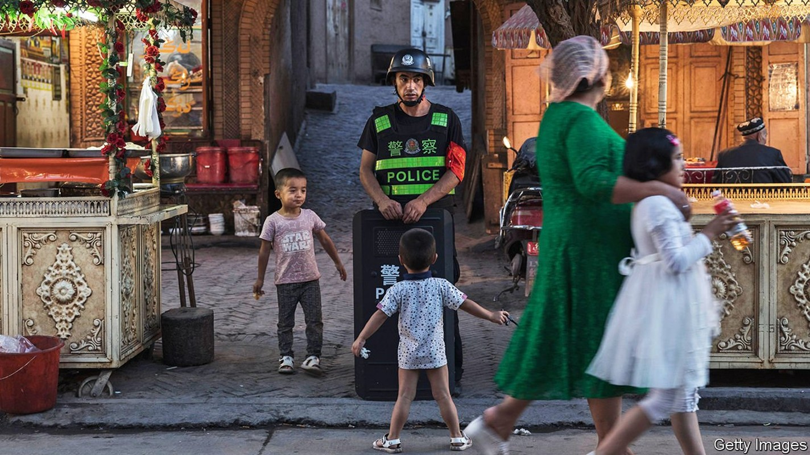
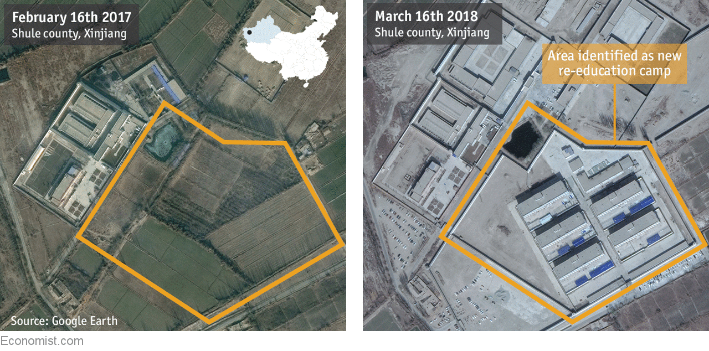
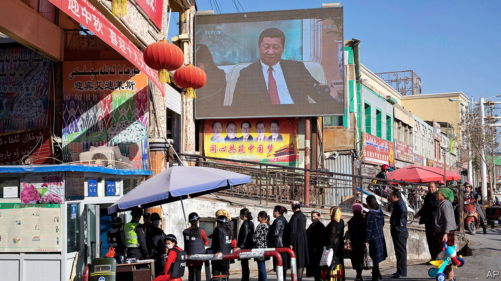
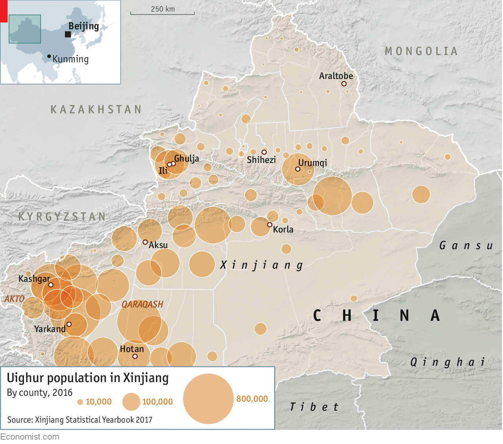
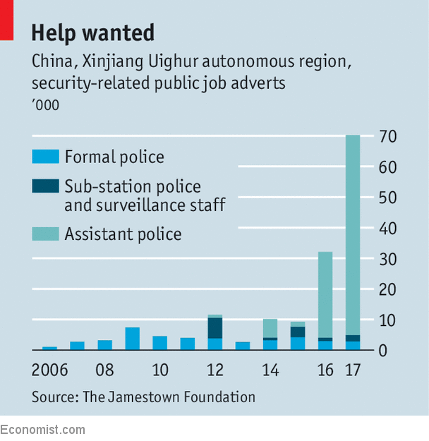
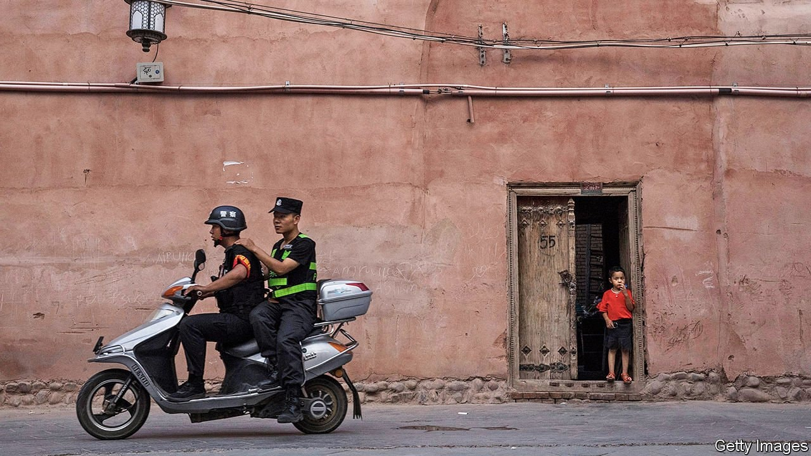

China has turned Xinjiang into a police state like no other
Totalitarian determination and modern technology have produced a massive abuse of human rights

Listen to this story.Enjoy more audio and podcasts on iOS or Android.
Listen to this story
Save time by listening to our audio articles as you multitask
“THE prophet Sulayman approached his son and said to him, ‘I have received a message from God. I want you to circle the Earth and see if there are more people who are alive in spirit or more people who are dead in spirit.’ After a period the son returned and said, ‘Father I went to many places and everywhere I went I saw more people who were dead than those who were alive.’”
Hasan shared that message on a WeChat social-messaging group in 2015, when he was 23. Born in Yarkand, a town in southern Xinjiang, Hasan had moved to the provincial capital, Urumqi, to sell jade and shoes and to learn more about Islam. He described himself to Darren Byler, an anthropologist from the University of Washington, as a Sufi wanderer, a pious man with a wife and small daughter, who prayed five times a day and disapproved of dancing and immodesty.
But in January 2015 the provincial government was demanding that everyone in Urumqi return to their native home to get a new identity card. “I am being forced to go back,” Hasan complained to Mr Byler. “The Yarkand police are calling me every day. They are making my parents call me and tell me the same thing.” Eventually, he and his family boarded a bus for the 20-hour journey home. It was hit by a truck. Hasan’s wife and daughter were killed. He was hospitalised. “It was the will of Allah,” he said.
Hasan hoped the authorities would allow him to return to Urumqi because of his injuries. No chance. Having lost wife, child and livelihood, Hasan lost his liberty, too. A fortnight after his accident, he was sent to a re-education camp for an indefinite period. There, for all his relatives know, he remains.
Hasan is one of hundreds of thousands of Uighurs, a Turkic-language people, who have disappeared in Xinjiang, China’s north-western province. It is an empty, far-flung place; Hasan’s home town of Yarkand is as close to Baghdad as it is to Beijing. It is also a crucial one. The region is China’s biggest domestic producer of oil and gas, and much of the fuel imported from Central Asia and Russia passes through on its way to the industries of the east coast. It is now a vital link in the Belt and Road Initiative, a foreign policy which aims to bind the Middle East and Europe to China with ties of infrastructure, investment and trade.
But on top of that it is the home of the Uighurs, the largest Muslim group in the country, and ethnically quite distinct from the Han Chinese. A recent history of Uighur unrest—in particular bloody inter-ethnic violence in Urumqi in 2009 that followed the murder of Uighurs elsewhere in China—and subsequent terrorism have sent the government’s repressive tendencies into overdrive. Under a new party boss, Chen Quanguo, appointed in 2016, the provincial government has vastly increased the money and effort it puts into controlling the activities and patrolling the beliefs of the Uighur population. Its regime is racist, uncaring and totalitarian, in the sense of aiming to affect every aspect of people’s lives. It has created a fully-fledged police state. And it is committing some of the most extensive, and neglected, human-rights violations in the world.
The not-quite-Gulag archipelago
The government is building hundreds or thousands of unacknowledged re-education camps to which Uighurs can be sent for any reason or for none. In some of them day-to-day conditions do not appear to be physically abusive as much as creepy. One released prisoner has said he was not permitted to eat until he had thanked Xi Jinping, the Chinese president, and the Communist Party. But there have been reports of torture at others. In January, 82-year-old Muhammad Salih Hajim, a respected religious scholar, died in detention in Urumqi.
Kashgar, the largest Uighur city, has four camps, of which the largest is in Number 5 Middle School. A local security chief said in 2017 that “approximately 120,000” people were being held in the city. In Korla, in the middle of the province, a security official recently said the camps are so full that officials in them are begging the police to stop bringing people.
As a result, more and more camps are being built: the re-education archipelago is adding islands even faster than the South China Sea. Adrian Zenz of the European School of Culture and Theology in Kortal, Germany, has looked at procurement contracts for 73 re-education camps. He found their total cost to have been 682m yuan ($108m), almost all spent since April 2017. Records from Akto, a county near the border with Kyrgyzstan, say it spent 9.6% of its budget on security (including camps) in 2017. In 2016 spending on security in the province was five times what it had been in 2007. By the end of 2017 it was ten times that: 59bn yuan.

For all this activity, the government has not officially confirmed that the camps exist. They are not governed by any judicial process; detentions are on the orders of the police or party officials, not the verdict of a court. A woman working as an undertaker was imprisoned for washing bodies according to Islamic custom. Thirty residents of Ili, a town near the Kazakh border, were detained “because they were suspected of wanting to travel abroad,” according to the local security chief. Other offences have included holding strong religious views, allowing others to preach religion, asking where one’s relatives are and failing to recite the national anthem in Chinese.
A significant chunk of the total Uighur population is interned in this way. If the rate of detention in Kashgar applied to the province as a whole, 5% of the Uighur population of 10m would be detained. Other evidence suggests that this is quite possible. In February Radio Free Asia (RFA), a broadcaster financed by an independent agency of the American government, cold-called 11 families at random in Araltobe, in the north of the province, far from the Uighurs’ heartland. Six said family members had been sent to camps. In a village later visited by Agence France Presse in Qaraqash county, near Hotan, a fifth of adults had been detained over four months.
Maya Wang of Human Rights Watch, an advocacy group, reckons the overall number detained may be 800,000. Timothy Grose, a professor at Rose-Hulman University in Indiana, puts the total between 500,000 and 1m, which would imply that something like a sixth to a third of young and middle-aged Uighur men are being detained, or have been at some point in the past year.
The Chinese government argues that harsh measures are needed to prevent violence associated with Uighur separatism. In 2013 a Uighur suicide-driver crashed his car into pedestrians in Tiananmen Square in Beijing. In 2014 a knife-wielding Uighur gang slaughtered 31 travellers at a train station in Kunming, Yunnan province, an incident some in China compared to the September 11th 2001 attacks on America. Unrest in Yarkand later that year led to a hundred deaths; an attack at a coal mine in Aksu killed 50 people. Kyrgyzstani authorities blamed Uighur terrorists for an attempt to blow up the Chinese embassy in Bishkek; Uighurs have been blamed for a bombing which killed 20 at a shrine in Bangkok popular with Chinese tourists.
There are worrying links, as the Chinese authorities are keen to point out, between Uighur separatism and global jihad, especially in the Uighur diaspora, which is based in Turkey. Chinese and Syrian officials say 1,500 Uighurs have fought with Islamic State (IS) or Jabhat al-Nusra (part of al-Qaeda) in Syria. A group called the Turkestan Islamic Party, which demands independence for Xinjiang, is banned under anti-terrorist laws in America and Europe. In 2016 a defector from IS provided a list of foreign recruits; 114 came from Xinjiang.
In the grid
But the system of repression in the province goes far beyond anything that would be justified by such proclivities and affiliations. In Hotan there is a new police station every 300 metres or so. They are called “convenience police stations”, as if they were shops—and in fact they do offer some consumer services, such as bottled water and phone recharging. The windowless stations, gunmetal grey, with forbidding grilles on their doors, are part of a “grid-management system” like that which Mr Chen pioneered when he was party boss in Tibet from 2011 to 2016. The authorities divide each city into squares, with about 500 people. Every square has a police station that keeps tabs on the inhabitants. So, in rural areas, does every village.
At a large checkpoint on the edge of Hotan a policeman orders everyone off a bus. The passengers (all Uighur) take turns in a booth. Their identity cards are scanned, photographs and fingerprints of them are taken, newly installed iris-recognition technology peers into their eyes. Women must take off their headscarves. Three young Uighurs are told to turn on their smartphones and punch in the passwords. They give the phones to a policeman who puts the devices into a cradle that downloads their contents for later analysis. One woman shouts at a policeman that he is Uighur, why is he looking at her phone?
There can be four or five checkpoints every kilometre. Uighurs go through them many times a day. Shops and restaurants in Hotan have panic buttons with which to summon the police. The response time is one minute. Apparently because of the Kunming knife attack, knives and scissors are as hard to buy as a gun in Japan. In butchers and restaurants all over Xinjiang you will see kitchen knives chained to the wall, lest they be snatched up and used as weapons. In Aksu QR codes containing the owner’s identity-card information have to be engraved on every blade.
Remarkably, all shops and restaurants in Hotan must have a part-time policeman on duty. Thousands of shop assistants and waiters have been enrolled in the police to this end. Each is issued with a helmet, flak jacket and three-foot baton. They train in the afternoon. In the textile market these police officers sit in every booth and stall, selling things; their helmets and flak jackets, which are uncomfortable, are often doffed. A squad of full-time police walks through the market making sure security cameras are working and ordering shop assistants to put their helmets back on. Asked why they wear them, the assistants reply tersely “security”.
At the city’s railway station, travellers go through three rounds of bag checks before buying a ticket. On board, police walk up and down ordering Uighurs to open their luggage again. As the train pulls into Kashgar, it passes metal goods wagons. A toddler points at them shouting excitedly “Armoured car! Armoured car!” Paramilitary vehicles are more familiar to him than rolling stock.
Uniformed shop assistants, knife controls and “convenience police stations” are only the most visible elements of the police state. The province has an equally extensive if less visible regime that uses yet more manpower and a great deal of technology to create total surveillance.
Improving lives, winning hearts
Under a system called fanghuiju, teams of half a dozen—composed of policemen or local officials and always including one Uighur speaker, which almost always means a Uighur—go from house to house compiling dossiers of personal information. Fanghuiju is short for “researching people’s conditions, improving people’s lives, winning people’s hearts”. But the party refers to the work as “eradicating tumours”. The teams—over 10,000 in rural areas in 2017—report on “extremist” behaviour such as not drinking alcohol, fasting during Ramadan and sporting long beards. They report back on the presence of “undesirable” items, such as Korans, or attitudes—such as an “ideological situation” that is not in wholehearted support of the party.

The watchful and the watched
Since the spring of 2017, the information has been used to rank citizens’ “trustworthiness” using various criteria. People are deemed trustworthy, average or untrustworthy depending on how they fit into the following categories: 15 to 55 years old (ie, of military age); Uighur (the catalogue is explicitly racist: people are suspected merely on account of their ethnicity); unemployed; have religious knowledge; pray five times a day (freedom of worship is guaranteed by China’s constitution); have a passport; have visited one of 26 countries; have ever overstayed a visa; have family members in a foreign country (there are at least 10,000 Uighurs in Turkey); and home school their children. Being labelled “untrustworthy” can lead to a camp.
To complete the panorama of human surveillance, the government has a programme called “becoming kin” in which local families (mostly Uighur) “adopt” officials (mostly Han). The official visits his or her adoptive family regularly, lives with it for short periods, gives the children presents and teaches the household Mandarin. He also verifies information collected by fanghuiju teams. The programme appears to be immense. According to an official report in 2018, 1.1m officials have been paired with 1.6m families. That means roughly half of Uighur households have had a Han-Chinese spy/indoctrinator assigned to them.
Such efforts map the province’s ideological territory family by family; technology maps the population’s activities street by street and phone by phone. In Hotan and Kashgar there are poles bearing perhaps eight or ten video cameras at intervals of 100-200 metres along every street; a far finer-grained surveillance net than in most Chinese cities. As well as watching pedestrians the cameras can read car number plates and correlate them with the face of the person driving. Only registered owners may drive cars; anyone else will be arrested, according to a public security official who accompanied this correspondent in Hotan. The cameras are equipped to work at night as well as by day.
Because the government sees what it calls “web cleansing” as necessary to prevent access to terrorist information, everyone in Xinjiang is supposed to have a spyware app on their mobile phone. Failing to install the app, which can identify people called, track online activity and record social-media use, is an offence. “Wi-Fi sniffers” in public places keep an eye, or nose, on all networked devices in range.
Next, the records associated with identity cards can contain biometric data including fingerprints, blood type and DNA information as well as the subject’s detention record and “reliability status”. The government collects a lot of this biometric material by stealth, under the guise of a public-health programme called “Physicals for All”, which requires people to give blood samples. Local officials “demanded [we] participate in the physicals,” one resident of Kashgar told Human Rights Watch, an NGO. “Not participating would have been seen as a problem…”
A system called the Integrated Joint Operations Platform (IJOP), first revealed by Human Rights Watch, uses machine-learning systems, information from cameras, smartphones, financial and family-planning records and even unusual electricity use to generate lists of suspects for detention. One official WeChat report said that verifying IJOP’s lists was one of the main responsibilities of the local security committee. Even without high-tech surveillance, Xinjiang’s police state is formidable. With it, it becomes terrifying.

In theory, the security system in Xinjiang applies to everyone equally. In practice it is as race-based as apartheid in South Africa was. The security apparatus is deployed in greatest force in the south-west, where around 80% of Uighurs live (see map). In a city like Shihezi, which is 95% Han, there are far fewer street checkpoints, if any, and a normal level of policing. Where there are checkpoints, Han Chinese are routinely waved through. Uighurs are always stopped.
The minarets torn down
Islam is a special target. In Hotan, the neighbourhood mosques have been closed, leaving a handful of large places of worship. Worshippers must register with the police before attending. At the entrance to the largest mosque in Kashgar, the Idh Kha—a famous place of pilgrimage—two policemen sit underneath a banner saying “Love the party, love the country”. Inside, a member of the mosque’s staff holds classes for local traders on how to be a good communist. In Urumqi the remaining mosques have had their minarets knocked down and their Islamic crescents torn off.
Some 29 Islamic names may no longer be given to children. In schools, Uighur-language instruction is vanishing—another of the trends which have markedly accelerated under Mr Chen. Dancing after prayers and specific Uighur wedding ceremonies and funerary rites are prohibited.
Unlike those of South Africa, the two main racial groups are well matched in size. According to the 2010 census, Uighurs account for 46% of the province’s population and Han Chinese 40% (the rest are smaller minorities such as Kazakhs and Kirgiz). But they live apart and see the land in distinct ways. Uighurs regard Xinjiang as theirs because they have lived in it for thousands of years. The Han Chinese regard it as theirs because they have built a modern economy in its deserts and mountains. They talk of bringing “modern culture” and “modern lifestyle” to the locals—by which they mean the culture and lifestyle of modern Han China.
So how have the Han and Uighur reacted to the imposition of a police state? Yang Jiehun and Xiao Junduo are Han Chinese veterans of the trade in Hotan jade (which the Chinese hold to be the best in the world, notably in its very pale “mutton-fat” form). Asked about security, they give big smiles, a thumbs-up and say the past year’s crackdown has been “really well received”. “In terms of public security, Urumqi is the safest it has ever been,” says Mr Xiao, whose family came to the province in the 1950s, when the People’s Liberation Army and state-owned enterprises were reinforcing the border with the Soviet Union. “The Uighurs are being helped out of poverty,” he avers. “They understand and support the policy.”
Not all Han Chinese in Xinjiang are quite as enthusiastic. Tens of thousands came to the province fairly recently, mostly in the 1990s, to seek their fortunes as independent traders and business people, rather than being transferred there by state-owned companies or the army. They approve of better security but dislike the damage being done to the economy—for example, the way movement controls make it harder to employ Uighurs. So far, this ambivalence is not seriously weakening the support among the Han and, for the government in Beijing, that is all that matters. It sees Xinjiang mainly as a frontier. The Han are the principal guarantors of border security. If they are happy, so is the government.
The Uighur reaction is harder to judge; open criticism or talking to outsiders can land you in jail. The crackdown has been effective inasmuch as there have been no (known) Uighur protests or attacks since early 2017. It seems likely that many people are bowing before the storm. As Sultan, a student in Kashgar, says with a shrug: “There’s nothing we can do about it.”
But there are reasons for thinking resentment is building up below the surface. According to anthropological work by Mr Byler and Joanne Smith Finley of Newcastle University in Britain, a religious revival had been under way before the imposition of today’s harsh control. Mosques were becoming more crowded, religious schools attracting more pupils. Now the schools and mosques are largely empty, even for Friday prayers. It is hard to believe that religious feeling has vanished. More likely a fair bit has gone underground.

And the position of Uighurs who co-operate with the Han authorities is becoming untenable. The provincial government needs the Uighur elite because its members have good relations with both sides. The expansion of the police state has added to the number of Uighurs it needs to co-opt. According to Mr Zenz and James Leibold of La Trobe University in Melbourne, 90% of the security jobs advertised in 2017 were “third tier” jobs for low-level police assistants: cheap, informal contracts which mainly go to Uighurs (see chart). But at the same time as needing more Uighurs, the authorities have made it clear that they do not trust them. Part of the repression has been aimed at “two-faced officials” who (the party says) are publicly supporting the security system while secretly helping victims. Simultaneously recruiting more Uighurs and distrusting them more creates an ever larger pool that might one day turn against the system from within.

A Han businessman who travels frequently between Urumqi and Kashgar says he used to feel welcome in the south. “Now it has all changed. They are not afraid. But they are resentful. They look at me as if they are wondering what I am doing in their country.” One of the few detainees released from the camps, Omurbek Eli, told RFA that the authorities “are planting the seeds of hatred and turning [detainees] into enemies. This is not just my view—the majority of people in the camp feel the same way.”
Hasan’s warning
China’s Communist rulers believe their police state limits separatism and reduces violence. But by separating the Uighur and Han further, and by imposing huge costs on one side that the other side, for the most part, blithely ignores, they are ratcheting up tension. The result is that both groups are drifting towards violence.
Before he disappeared, Hasan, the self-styled Sufi wanderer, expressed Xinjiang’s plight. “To be Uighur is hard,” he wrote on WeChat in 2015. “I don’t even know what I am accused of, but I must accept their judgment. I have no choice. Where there is no freedom, there is tension. Where there is tension there are incidents. Where there are incidents there are police. Where there are police there is no freedom.”